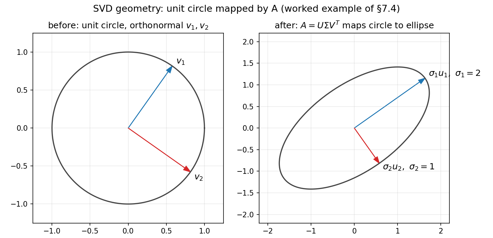

7. SVD and positive definite matrices
Chapter 6 ended with a limitation: eigendecomposition wants a square matrix with enough independent eigenvectors, and symmetric matrices are the only ones that always cooperate (§6.11). This chapter removes both restrictions. First, the singular value decomposition — a factorization that works for every matrix, rectangular included. Then positive definite matrices — the quadratic-form test that decides whether a stationary point is a minimum, a workhorse of optimization.
7.1 Why eigendecomposition is not enough
- Eigendecomposition \(A = S\Lambda S^{-1}\) needs a square \(n \times n\) matrix (§6.7).
- It needs \(n\) independent eigenvectors — defective matrices (§6.10) simply have no such factorization.
- Only symmetric matrices are guaranteed to cooperate (§6.11).
The SVD drops all of this: any real \(m \times n\) matrix gets factored, no symmetry, no squareness, no eigenvector-counting required.
7.2 The SVD, stated
Def. Every real \(m \times n\) matrix \(A\) can be written as \[A = U\Sigma V^T\] where:
- \(U\) is \(m \times m\) with orthonormal columns (\(U^TU = I\));
- \(V\) is \(n \times n\) with orthonormal columns (\(V^TV = I\));
- \(\Sigma\) is \(m \times n\), all zeros except a diagonal \(\sigma_1 \ge \sigma_2 \ge \cdots \ge 0\) down its main diagonal.
Terminology: the \(\sigma_i\) are the \(singular\) \(values\) of \(A\). The columns of \(V\) are the \(right\) \(singular\) \(vectors\); the columns of \(U\) are the \(left\) \(singular\) \(vectors\).
eg. For a \(2 \times 3\) matrix, the shapes read \[\begin{bmatrix} * & * & * \\ * & * & * \end{bmatrix}_{2 \times 3} = U_{2 \times 2}\ \Sigma_{2 \times 3}\ V^T_{2 \times 3}, \qquad \Sigma = \begin{bmatrix} \sigma_1 & 0 & 0 \\ 0 & \sigma_2 & 0 \end{bmatrix}.\] \(U\) and \(V\) are square and orthogonal; the “diagonal” \(\Sigma\) is rectangular, with the singular values sitting on its main diagonal (§7.2’s only rectangle-with-a-diagonal).
Basically, … SVD says: every matrix, no matter how lopsided, is just “turn \(\rightarrow\) stretch \(\rightarrow\) turn”. \(V^T\) and \(U\) are pure rotations/reflections (they never change lengths); all the stretching is done by the diagonal \(\Sigma\).
7.3 Where \(U\), \(\Sigma\), \(V\) come from: the \(A^TA\) bridge
Chapter 6, §6.12(iii) promised this: the eigenvalues of \(A^TA\) are the squared singular values. Here is the bridge, built from the lecture’s argument.
Step 0 — \(A^TA\) is symmetric. For any \(A\), \((A^TA)^T = A^T(A^T)^T = A^TA\). By the spectral theorem (§6.11) it has \(n\) real eigenvalues and an orthonormal eigenbasis \(\mathbf{x}_1, \ldots, \mathbf{x}_n\) of \(\mathbb{R}^n\): \[A^TA\mathbf{x}_i = \lambda_i\mathbf{x}_i, \qquad \mathbf{x}_i^T\mathbf{x}_j = 0\ (i \ne j), \ \lVert\mathbf{x}_i\rVert = 1.\]
Step 1 — the eigenvalues are \(\ge 0\). Dotting the eigen equation with \(\mathbf{x}_i\): \[\lambda_i = \mathbf{x}_i^T A^TA\mathbf{x}_i = (A\mathbf{x}_i)^T(A\mathbf{x}_i) = \lVert A\mathbf{x}_i\rVert^2 \ge 0.\] So order them \(\lambda_1 \ge \lambda_2 \ge \cdots \ge \lambda_r > 0 = \lambda_{r+1} = \cdots = \lambda_n\). The \(singular\) \(values\) are \[\sigma_i = \sqrt{\lambda_i} \quad (i = 1, \ldots, r),\] placed as the diagonal of \(\Sigma\). (This is why the square root appears: \(\Sigma\) will hold \(\sigma_i\), and \(\sigma_i^2\) are the eigenvalues.)
Step 2 — \(V\) and \(U\). Put the orthonormal \(\mathbf{x}_i\) as the columns of \(V\). For \(i \le r\) define \[\mathbf{y}_i = \frac{1}{\sigma_i}A\mathbf{x}_i.\] Then each \(\mathbf{y}_i\) is unit length (\(\lVert A\mathbf{x}_i\rVert = \sqrt{\lambda_i} = \sigma_i\)), and they are mutually orthogonal: \[\mathbf{y}_i^T\mathbf{y}_j = \frac{1}{\sigma_i\sigma_j}\mathbf{x}_i^TA^TA\mathbf{x}_j = \frac{\lambda_j}{\sigma_i\sigma_j}\mathbf{x}_i^T\mathbf{x}_j = 0 \quad (i \ne j).\] Extend \(\mathbf{y}_1, \ldots, \mathbf{y}_r\) to a full orthonormal basis of \(\mathbb{R}^m\) (always possible); these \(m\) vectors are the columns of \(U\).
Step 3 — \(U\Sigma V^T = A\). The \((i,j)\) entry of \(U^TAV\) is \(\mathbf{y}_i^TA\mathbf{x}_j\): it equals \(\sigma_j\) when \(i = j \le r\) (since \(A\mathbf{x}_j = \sigma_j\mathbf{y}_j\)) and \(0\) otherwise (for \(j > r\), \(\lambda_j = 0\) gives \(A\mathbf{x}_j = \mathbf{0}\)). So \(U^TAV = \Sigma\), i.e. \(A = U\Sigma V^T\).
Note: from the factorization, \(AA^T = U\Sigma\Sigma^T U^T\), so the columns of \(U\) are orthonormal eigenvectors of the symmetric \(AA^T\) — the left side mirrors the right side.
Basically, … \(A\) itself may have no eigenvectors at all (try the \(90^\circ\) rotation of §6.3). But \(A^TA\) is always symmetric, so it always has a full set of real eigenvalues and orthonormal eigenvectors. The SVD just reads its ingredients off \(A^TA\): take square roots of the eigenvalues to get the stretches, take the eigenvectors as \(V\), and push them through \(A\) to get \(U\).
7.4 Worked example: a square but non-diagonalizable \(2 \times 2\) matrix
Take \(A = \begin{bmatrix} \sqrt{2} & 1 \\ 0 & \sqrt{2} \end{bmatrix}\) (the lecture’s example). First a sanity check: \(A\) has eigenvalue \(\sqrt{2}\) twice, but \(A - \sqrt{2}I = \begin{bmatrix} 0 & 1 \\ 0 & 0 \end{bmatrix}\) has only a one-dimensional eigenspace — \(A\) is defective, so no eigendecomposition exists (§6.10). The SVD has no such problem.
Step 1 — form \(A^TA\) and find its eigenpairs: \[A^TA = \begin{bmatrix} \sqrt{2} & 0 \\ 1 & \sqrt{2} \end{bmatrix}\begin{bmatrix} \sqrt{2} & 1 \\ 0 & \sqrt{2} \end{bmatrix} = \begin{bmatrix} 2 & \sqrt{2} \\ \sqrt{2} & 3 \end{bmatrix}.\] Trace \(= 5\), determinant \(= 6 - 2 = 4\), so the characteristic equation is \(\lambda^2 - 5\lambda + 4 = 0\), giving \(\lambda_1 = 4\), \(\lambda_2 = 1\). Singular values: \(\sigma_1 = \sqrt{4} = 2\), \(\sigma_2 = \sqrt{1} = 1\).
Eigenvectors. For \(\lambda_1 = 4\): \(A^TA - 4I = \begin{bmatrix} -2 & \sqrt{2} \\ \sqrt{2} & -1 \end{bmatrix}\), and \(\begin{bmatrix} 1 \\ \sqrt{2} \end{bmatrix}\) kills it (\(-2 + \sqrt{2}\cdot\sqrt{2} = 0\) ✓). For \(\lambda_2 = 1\): \(A^TA - I = \begin{bmatrix} 1 & \sqrt{2} \\ \sqrt{2} & 2 \end{bmatrix}\), and \(\begin{bmatrix} \sqrt{2} \\ -1 \end{bmatrix}\) kills it (\(\sqrt{2} - \sqrt{2} = 0\) ✓). Normalize (both have length \(\sqrt{3}\)): \[\mathbf{x}_1 = \frac{1}{\sqrt{3}}\begin{bmatrix} 1 \\ \sqrt{2} \end{bmatrix}, \qquad \mathbf{x}_2 = \frac{1}{\sqrt{3}}\begin{bmatrix} \sqrt{2} \\ -1 \end{bmatrix}, \qquad V = [\mathbf{x}_1\ \mathbf{x}_2] = \frac{1}{\sqrt{3}}\begin{bmatrix} 1 & \sqrt{2} \\ \sqrt{2} & -1 \end{bmatrix}.\] Sanity check \(V^TV = I\): \(\mathbf{x}_1^T\mathbf{x}_2 = \frac{1}{3}(\sqrt{2} - \sqrt{2}) = 0\), \(\lVert\mathbf{x}_1\rVert^2 = \frac{1}{3}(1 + 2) = 1\), \(\lVert\mathbf{x}_2\rVert^2 = \frac{1}{3}(2 + 1) = 1\) ✓.
Step 2 — build \(U\) from \(\mathbf{y}_i = A\mathbf{x}_i/\sigma_i\): \[A\mathbf{x}_1 = \frac{1}{\sqrt{3}}\begin{bmatrix} \sqrt{2} & 1 \\ 0 & \sqrt{2} \end{bmatrix}\begin{bmatrix} 1 \\ \sqrt{2} \end{bmatrix} = \frac{1}{\sqrt{3}}\begin{bmatrix} 2\sqrt{2} \\ 2 \end{bmatrix}, \qquad \mathbf{y}_1 = \frac{1}{2}A\mathbf{x}_1 = \begin{bmatrix} \sqrt{2/3} \\ 1/\sqrt{3} \end{bmatrix},\] \[A\mathbf{x}_2 = \frac{1}{\sqrt{3}}\begin{bmatrix} \sqrt{2} & 1 \\ 0 & \sqrt{2} \end{bmatrix}\begin{bmatrix} \sqrt{2} \\ -1 \end{bmatrix} = \frac{1}{\sqrt{3}}\begin{bmatrix} 1 \\ -\sqrt{2} \end{bmatrix}, \qquad \mathbf{y}_2 = \frac{1}{1}A\mathbf{x}_2 = \begin{bmatrix} 1/\sqrt{3} \\ -\sqrt{2/3} \end{bmatrix}.\] Check: \(\lVert\mathbf{y}_1\rVert^2 = 2/3 + 1/3 = 1\), \(\lVert\mathbf{y}_2\rVert^2 = 1/3 + 2/3 = 1\), \(\mathbf{y}_1^T\mathbf{y}_2 = \frac{\sqrt{2}}{3} - \frac{\sqrt{2}}{3} = 0\) ✓. So \[U = \begin{bmatrix} \sqrt{2/3} & 1/\sqrt{3} \\ 1/\sqrt{3} & -\sqrt{2/3} \end{bmatrix}, \qquad \Sigma = \begin{bmatrix} 2 & 0 \\ 0 & 1 \end{bmatrix}.\]
Step 3 — verify \(A = U\Sigma V^T\), entry by entry. First \(\Sigma V^T = \frac{1}{\sqrt{3}}\begin{bmatrix} 2 & 2\sqrt{2} \\ \sqrt{2} & -1 \end{bmatrix}\). Then: \[(1,1):\ \frac{1}{\sqrt{3}}\left(\sqrt{\tfrac{2}{3}}\cdot 2 + \tfrac{1}{\sqrt{3}}\cdot\sqrt{2}\right) = \frac{1}{\sqrt{3}}\cdot\frac{3\sqrt{2}}{\sqrt{3}} = \sqrt{2}\ \checkmark\] \[(1,2):\ \frac{1}{\sqrt{3}}\left(\sqrt{\tfrac{2}{3}}\cdot 2\sqrt{2} + \tfrac{1}{\sqrt{3}}\cdot(-1)\right) = \frac{1}{\sqrt{3}}\left(\frac{4}{\sqrt{3}} - \frac{1}{\sqrt{3}}\right) = 1\ \checkmark\] \[(2,1):\ \frac{1}{\sqrt{3}}\left(\tfrac{1}{\sqrt{3}}\cdot 2 - \sqrt{\tfrac{2}{3}}\cdot\sqrt{2}\right) = \frac{1}{\sqrt{3}}\left(\frac{2}{\sqrt{3}} - \frac{2}{\sqrt{3}}\right) = 0\ \checkmark\] \[(2,2):\ \frac{1}{\sqrt{3}}\left(\tfrac{1}{\sqrt{3}}\cdot 2\sqrt{2} + \sqrt{\tfrac{2}{3}}\right) = \frac{1}{\sqrt{3}}\cdot\frac{3\sqrt{2}}{\sqrt{3}} = \sqrt{2}\ \checkmark\] All four entries of \(A = \begin{bmatrix} \sqrt{2} & 1 \\ 0 & \sqrt{2} \end{bmatrix}\) recovered.
Note: here \(\det(U) = -\frac{2}{3} - \frac{1}{3} = -1\) — \(U\) contains a reflection, not just a rotation. Orthogonal matrices are allowed to flip (§7.6).
Basically, … Even when a matrix is too broken for eigenvectors (defective), \(A^TA\) is always well-behaved. The recipe never changes: eigenpairs of \(A^TA\) → square-root the eigenvalues → normalize → push through \(A\) to get \(U\).
7.5 Worked example: a rectangular \(2 \times 3\) matrix
Take \(A = \begin{bmatrix} 1 & 0 & 1 \\ 0 & 1 & 1 \end{bmatrix}\).
Step 1 — \(A^TA\). Columns of \(A\): \(\mathbf{c}_1 = (1,0)^T\), \(\mathbf{c}_2 = (0,1)^T\), \(\mathbf{c}_3 = (1,1)^T\); entry \((i,j)\) is \(\mathbf{c}_i \cdot \mathbf{c}_j\): \[A^TA = \begin{bmatrix} 1 & 0 & 1 \\ 0 & 1 & 1 \\ 1 & 1 & 2 \end{bmatrix}.\] \(\det(A^TA - \lambda I) = (1-\lambda)\big[(1-\lambda)(2-\lambda) - 1\big] - (1-\lambda) = (1-\lambda)(\lambda^2 - 3\lambda) = \lambda(1-\lambda)(\lambda-3)\). So \(\lambda_1 = 3\), \(\lambda_2 = 1\), \(\lambda_3 = 0\); singular values \(\sigma_1 = \sqrt{3}\), \(\sigma_2 = 1\), \(\sigma_3 = 0\).
Eigenvectors (normalized): for \(\lambda_1 = 3\), \((A^TA - 3I)\mathbf{x} = \mathbf{0}\) gives \(x_3 = 2x_1 = 2x_2\), so \(\mathbf{x}_1 = \frac{1}{\sqrt{6}}(1,1,2)^T\) (check: \((1+1+4)/6 = 1\) ✓). For \(\lambda_2 = 1\): \(x_3 = 0\), \(x_1 + x_2 = 0\), so \(\mathbf{x}_2 = \frac{1}{\sqrt{2}}(1,-1,0)^T\). For \(\lambda_3 = 0\): \(x_1 + x_3 = 0\), \(x_2 + x_3 = 0\), so \(\mathbf{x}_3 = \frac{1}{\sqrt{3}}(1,1,-1)^T\). These are mutually orthogonal ✓ (pairwise dot products are \(0\)).
Step 2 — \(U\) from the two nonzero singular values: \[A\mathbf{x}_1 = \frac{1}{\sqrt{6}}A(1,1,2)^T = \frac{1}{\sqrt{6}}(3,3)^T, \qquad \mathbf{u}_1 = \frac{1}{\sqrt{3}}A\mathbf{x}_1 = \left(\tfrac{1}{\sqrt{2}}, \tfrac{1}{\sqrt{2}}\right)^T,\] \[A\mathbf{x}_2 = \frac{1}{\sqrt{2}}A(1,-1,0)^T = \frac{1}{\sqrt{2}}(1,-1)^T, \qquad \mathbf{u}_2 = \frac{1}{1}A\mathbf{x}_2 = \left(\tfrac{1}{\sqrt{2}}, -\tfrac{1}{\sqrt{2}}\right)^T.\] \(\mathbf{u}_1, \mathbf{u}_2\) are already an orthonormal basis of \(\mathbb{R}^2\) — no extension needed.
Step 3 — assemble and verify. With \(r = 2\), \[U = \begin{bmatrix} 1/\sqrt{2} & 1/\sqrt{2} \\ 1/\sqrt{2} & -1/\sqrt{2} \end{bmatrix}, \quad \Sigma = \begin{bmatrix} \sqrt{3} & 0 & 0 \\ 0 & 1 & 0 \end{bmatrix}, \quad V = \begin{bmatrix} 1/\sqrt{6} & 1/\sqrt{2} & 1/\sqrt{3} \\ 1/\sqrt{6} & -1/\sqrt{2} & 1/\sqrt{3} \\ 2/\sqrt{6} & 0 & -1/\sqrt{3} \end{bmatrix}.\] \(\Sigma V^T = \begin{bmatrix} 1/\sqrt{2} & 1/\sqrt{2} & \sqrt{2} \\ 1/\sqrt{2} & -1/\sqrt{2} & 0 \end{bmatrix}\) (since \(\sqrt{3}/\sqrt{6} = 1/\sqrt{2}\) and \(2\sqrt{3}/\sqrt{6} = \sqrt{2}\)). Multiplying by \(U\), entry by entry: \((1,1) = \tfrac{1}{2} + \tfrac{1}{2} = 1\) ✓, \((1,2) = \tfrac{1}{2} - \tfrac{1}{2} = 0\) ✓, \((1,3) = \tfrac{1}{\sqrt{2}}\cdot\sqrt{2} = 1\) ✓, \((2,1) = 0\) ✓, \((2,2) = 1\) ✓, \((2,3) = 1\) ✓ — all six entries of \(A\) recovered.
Note: \(\mathbf{x}_3\) (the null-space direction of \(A^TA\)) is annihilated: \(A\mathbf{x}_3 = \mathbf{0}\), which is why \(\sigma_3 = 0\) contributes nothing.
Reduced (economy) SVD. The zero column of \(\Sigma\) and the third column of \(V\) do no work. Dropping them: \[A = U_r\Sigma_r V_r^T, \qquad U_r = U\ (2 \times 2),\ \Sigma_r = \begin{bmatrix} \sqrt{3} & 0 \\ 0 & 1 \end{bmatrix},\ V_r = [\mathbf{x}_1\ \mathbf{x}_2]\ (3 \times 2).\] In general: full SVD keeps \(U\) \(m \times m\), \(\Sigma\) \(m \times n\), \(V\) \(n \times n\); reduced SVD keeps only the \(r\) nonzero singular values, so \(U_r\) is \(m \times r\), \(\Sigma_r\) is \(r \times r\), \(V_r\) is \(n \times r\).
7.6 Geometry of the SVD
Apply \(A = U\Sigma V^T\) to a vector \(\mathbf{x}\) in three stages: \(V^T\) rotates/reflects into the right-singular-vector basis, \(\Sigma\) stretches each coordinate by \(\sigma_i\), \(U\) rotates/reflects into the output basis. Since orthogonal maps preserve shapes up to turning, the only distortion \(A\) ever causes is pure axis-aligned stretching.
Consequence: \(A\) sends the unit sphere to an ellipsoid whose semiaxes are \(\sigma_i\mathbf{u}_i\) — i.e. \(A\mathbf{v}_i = \sigma_i\mathbf{u}_i\), the directions where \(A\) acts by pure scaling.

Rank. From the bridge: \(\sigma_i = 0 \iff \lambda_i = 0 \iff A\mathbf{x}_i = \mathbf{0}\). So the number of nonzero singular values equals \(\operatorname{rank}(A)\). In §7.5, \(\sigma_3 = 0\) because the two rows of \(A\) span only a 2-dimensional space — \(\operatorname{rank}(A) = 2\).
Basically, … Every matrix squashes or stretches a ball into an ellipsoid. The SVD reads off the ellipsoid’s axes: \(\sigma_i\) are the axis lengths, \(\mathbf{v}_i\) the input directions that get stretched, \(\mathbf{u}_i\) the output directions they land on. Rank is just “how many axes have nonzero length.”
7.7 Why SVD matters in ML
Eigendecomposition is picky (square, enough eigenvectors). SVD applies to every data matrix — and data matrices are almost never square: \(m\) samples \(\times\) \(n\) features.
One more payoff: the SVD is a sum of rank-one pieces, \[A = \sigma_1\mathbf{u}_1\mathbf{v}_1^T + \sigma_2\mathbf{u}_2\mathbf{v}_2^T + \cdots + \sigma_r\mathbf{u}_r\mathbf{v}_r^T,\] each term a matrix with a single nonzero singular value. Keeping only the first \(k\) terms gives \(A_k\), the best rank-\(k\) approximation of \(A\) — the rank-\(k\) matrix closest to \(A\). Since \(\sigma_1 \ge \sigma_2 \ge \cdots\), the dropped tail is the smallest possible error. This is the engine behind dimensionality reduction (keep the big stretches, discard the noise), latent-factor recommendation systems (user–item matrix \(\approx\) low-rank structure), and — coming in Chapter 24 — PCA, where the principal components are exactly the right singular vectors of the centered data matrix.
Basically, … Rank-\(k\) approximation is lossy compression for matrices: keep the \(k\) biggest stretches of the SVD, throw away the rest, and the leftover error is as small as any rank-\(k\) matrix can manage.
7.8 Positive definiteness: from quadratics to matrices
Before matrices, look at the quadratic function \(f(x, y) = ax^2 + 2bxy + cy^2\).
eg (the motivating case). Take \(f(x,y) = 2x^2 + 4xy + y^2\). Its partials are \(f_x = 4x + 4y\), \(f_y = 4x + 2y\) — both vanish at \((0,0)\), as they do for any quadratic of this form, whatever its coefficients. The question is what kind of stationary point \((0,0)\) is: minimum, maximum, or saddle? Its second partials are \(f_{xx} = 4\), \(f_{xy} = 4\), \(f_{yy} = 2\) — constant, so the same at \((0,0)\) as everywhere. We will come back to this \(f\) in §7.10.
Def. A function \(f\) with \(f(0,0) = 0\) that is strictly positive everywhere else is \(positive\) \(definite\).
Geometric picture: a bowl sitting on the origin, like \(f(x,y) = x^2 + y^2\).
- \(f > 0 \Rightarrow a > 0\): evaluate at \((1,0)\); \(f(1,0) = a\) must be positive.
- \(f > 0 \Rightarrow c > 0\): same argument at \((0,1)\).
- Complete the square: \[ax^2 + 2bxy + cy^2 = a\left(x + \tfrac{b}{a}y\right)^2 + \left(c - \tfrac{b^2}{a}\right)y^2.\] The first term is \(\ge 0\); for the whole thing to be \(> 0\) at every nonzero \((x,y)\), the second coefficient must be \(> 0\) too, i.e. \(c - b^2/a > 0\), or \(ac > b^2\).
So: \(f(x,y) = ax^2 + 2bxy + cy^2\) is positive definite iff \(a > 0\) and \(ac > b^2\).
The other cases: if \(ac = b^2\) (with \(a > 0\)), \(f\) is \(positive\) \(semi\)-\(definite\) — \(\ge 0\), but zero along a whole line, not just at the origin (a flat-bottomed valley). If \(a < 0\) with \(ac = b^2\), \(negative\) \(semi\)-\(definite\). If \(ac < b^2\), the origin is a \(saddle\) \(point\) — up in some directions, down in others.
eg. \(f(x,y) = x^2 - 10xy + y^2\) is not positive definite: \(f(1,1) = 1 - 10 + 1 = -8 < 0\), even though \(a, c > 0\). eg. \(f(x,y) = 2xy\): at \((1,1)\) it is \(2\), at \((1,-1)\) it is \(-2\) — a saddle at the origin.
Basically, … Positive definite means “a bowl”: zero at the origin, strictly uphill in every direction. If the bowl is dented so it dips below the origin somewhere, or flat along a line, it’s not positive definite anymore.
The matrix connection: with \(V = (x,y)^T\) and \(A = \begin{bmatrix} a & b \\ b & c \end{bmatrix}\), \[f(x,y) = V^TAV.\] Positive definiteness of the function becomes a property of the matrix.
7.9 Positive definite matrices
Def. A (real, symmetric — assumed from here on) \(n \times n\) matrix \(A\) is \(positive\) \(definite\) if \[\mathbf{x}^TA\mathbf{x} > 0 \quad \text{for every } \mathbf{x} \ne \mathbf{0}.\] (The symmetry assumption matters: only the symmetric part of a matrix contributes to \(\mathbf{x}^TA\mathbf{x}\), so definiteness is defined for symmetric matrices.)
Theorem (eigenvalue test). \(A\) is positive definite iff all its eigenvalues are strictly positive.
Proof (\(\Rightarrow\)). If \(A\mathbf{x} = \lambda\mathbf{x}\) with \(\mathbf{x} \ne \mathbf{0}\): \(\mathbf{x}^TA\mathbf{x} = \lambda\lVert\mathbf{x}\rVert^2 > 0\) by definiteness, and \(\lVert\mathbf{x}\rVert^2 > 0\), so \(\lambda > 0\).
Proof (\(\Leftarrow\)). By the spectral theorem (§6.11) there is an orthonormal eigenbasis \(\mathbf{x}_1, \ldots, \mathbf{x}_n\). Write any \(\mathbf{x} = c_1\mathbf{x}_1 + \cdots + c_n\mathbf{x}_n\); then \(A\mathbf{x} = c_1\lambda_1\mathbf{x}_1 + \cdots + c_n\lambda_n\mathbf{x}_n\), and orthonormality kills the cross terms: \[\mathbf{x}^TA\mathbf{x} = c_1^2\lambda_1 + \cdots + c_n^2\lambda_n > 0,\] since every \(\lambda_i > 0\) and at least one \(c_i^2 > 0\). ∎
For \(2 \times 2\), the quadratic conditions translate directly (with \(A = \begin{bmatrix} a & b \\ b & c \end{bmatrix}\)): \(A\) is positive definite iff \(a > 0\) and \(\det(A) = ac - b^2 > 0\).
eg (two ways). \(A = \begin{bmatrix} 2 & 1 \\ 1 & 2 \end{bmatrix}\).
Way 1 — the \(2 \times 2\) test: \(a = 2 > 0\), \(\det(A) = 4 - 1 = 3 > 0\). Positive definite ✓.
Way 2 — eigenvalues: \(\det(A - \lambda I) = (2-\lambda)^2 - 1 = \lambda^2 - 4\lambda + 3 = 0\) gives \(\lambda = 3, 1\), both \(> 0\) ✓. Equivalently, \(f(x,y) = \mathbf{x}^TA\mathbf{x} = 2x^2 + 2xy + 2y^2 = 2(x + y/2)^2 + \tfrac{3}{2}y^2 > 0\) for \((x,y) \ne (0,0)\).
eg (not definite). \(B = \begin{bmatrix} 1 & 2 \\ 2 & 1 \end{bmatrix}\): \(\det(B) = 1 - 4 = -3 < 0\), so not positive definite. Its eigenvalues are \(3\) and \(-1\) — mixed signs means the origin is a saddle of \(\mathbf{x}^TB\mathbf{x}\): along \((1,1)^T\) the form is \(6 > 0\), along \((1,-1)^T\) it is \(-2 < 0\).
Basically, … A symmetric matrix is positive definite iff it stretches every direction by a positive amount — all its eigenvalues are positive. If even one eigenvalue is negative or zero, some direction goes downhill or stays flat, and the bowl is broken.
7.10 Bowls, minima, and a look ahead at optimization
Return to the motivating example \(f(x,y) = 2x^2 + 4xy + y^2\) from §7.8. Its second partials (\(f_{xx} = 4\), \(f_{xy} = 4\), \(f_{yy} = 2\)) are constant, so the same at the stationary point \((0,0)\) as everywhere. Writing \(f = ax^2 + 2bxy + cy^2\) gives \(a = 2\), \(b = 2\), \(c = 1\) — note the \(2 \times 2\) test uses the halved mixed coefficient (\(2bxy = 4xy\), so \(b = 2\)). Then \(\det = ac - b^2 = 2 - 4 = -2 < 0\): the origin is a saddle, not a minimum, despite \(a > 0\).
The general principle (developed in Chapters 10 and 12): at a stationary point, the matrix of second derivatives — the \(Hessian\) — plays the role of \(A\) above. Positive definite Hessian \(\Rightarrow\) bowl \(\Rightarrow\) local minimum; indefinite Hessian \(\Rightarrow\) saddle. In ML, that Hessian is exactly what second-order optimizers examine, and covariance matrices (symmetric, always at least positive semi-definite since \(\mathbf{w}^TC\mathbf{w} = \operatorname{Var}(\mathbf{w}^T\mathbf{x}) \ge 0\)) are the other place definiteness shows up constantly.
7.11 Where this goes next
- Chapter 8 (single-variable calculus): Part I continues with calculus — derivatives as local linear maps, the one-dimensional version of the “bowl” idea.
- Chapter 10 (optimization): Hessians and second-order conditions — §7.10’s sketch becomes the full minimum/maximum/saddle test for functions of many variables.
- Chapter 24 (PCA): the SVD returns as the engine of principal component analysis: the right singular vectors of the centered data matrix are the principal components, and \(\sigma_i^2\) the explained variances.
Problem set
- Find the SVD of \(A = \begin{bmatrix} 2 & 0 \\ 0 & 3 \end{bmatrix}\): compute \(A^TA\), its eigenpairs, the singular values, \(V\), then \(U = AV\Sigma^{-1}\), and verify \(A = U\Sigma V^T\).
- Find the SVD of \(A = \begin{bmatrix} 0 & 1 \\ 1 & 0 \end{bmatrix}\). (Hint: \(A^TA\) is trivial here.)
- For the \(U\) in §7.4: verify \(U^TU = I\) explicitly and compute \(\det(U)\). What does the sign of the determinant tell you geometrically?
- For the rectangular example in §7.5, verify \(V^TV = I\) for the three columns \(\mathbf{x}_1, \mathbf{x}_2, \mathbf{x}_3\).
- A matrix has singular values \(5, 2, 0\). What is its rank? Explain in one line using §7.6.
- Write the best rank-1 approximation \(A_1 = \sigma_1\mathbf{u}_1\mathbf{v}_1^T\) of the §7.4 matrix \(A = \begin{bmatrix} \sqrt{2} & 1 \\ 0 & \sqrt{2} \end{bmatrix}\) as an explicit \(2 \times 2\) matrix (entries may involve \(\sqrt{2}\)), and compare it entry-wise with \(A\).
- Prove \(A^TA\) is always positive semi-definite, for any real \(A\). Conclude its eigenvalues are \(\ge 0\) (this is the fact §7.3 started from).
- Test \(A = \begin{bmatrix} 4 & 2 \\ 2 & 3 \end{bmatrix}\) for positive definiteness two ways: (a) the \(2 \times 2\) test \(a > 0\), \(\det(A) > 0\); (b) by finding both eigenvalues.
- Show \(B = \begin{bmatrix} 1 & 2 \\ 2 & 1 \end{bmatrix}\) is not positive definite: find its eigenvalues, and find one nonzero vector \(\mathbf{x}\) with \(\mathbf{x}^TB\mathbf{x} < 0\).
- Complete the square for \(f(x,y) = x^2 + 4xy + 5y^2\) to show it is positive definite. Write down its coefficient matrix and check the \(2 \times 2\) test on it.
- Let \(A\) be symmetric and positive definite. Using the eigenvalue test and the fact that \(\det(A)\) is the product of the eigenvalues (§6.4), show \(\det(A) > 0\).
Solutions
Attempt each problem first, then click a problem to reveal its worked solution.
- \(A = \begin{bmatrix} 2 & 0 \\ 0 & 3 \end{bmatrix}\). \(A^TA = \begin{bmatrix} 4 & 0 \\ 0 & 9 \end{bmatrix}\) — already diagonal, eigenvalues \(9\) and \(4\) (trace \(= 13\), determinant \(= 36\) ✓). Ordered: \(\lambda_1 = 9\), \(\lambda_2 = 4\); singular values \(\sigma_1 = 3\), \(\sigma_2 = 2\). Eigenvectors: for \(\lambda_1 = 9\), \((0,1)^T\); for \(\lambda_2 = 4\), \((1,0)^T\) — already orthonormal. \(V = \begin{bmatrix} 0 & 1 \\ 1 & 0 \end{bmatrix}\), \(\Sigma = \begin{bmatrix} 3 & 0 \\ 0 & 2 \end{bmatrix}\). \[\mathbf{u}_1 = \frac{1}{3}A(0,1)^T = \frac{1}{3}(0,3)^T = (0,1)^T, \qquad \mathbf{u}_2 = \frac{1}{2}A(1,0)^T = \frac{1}{2}(2,0)^T = (1,0)^T,\] \(U = \begin{bmatrix} 0 & 1 \\ 1 & 0 \end{bmatrix}\). Verify: \(U\Sigma = \begin{bmatrix} 0 & 2 \\ 3 & 0 \end{bmatrix}\), \(U\Sigma V^T = \begin{bmatrix} 0 & 2 \\ 3 & 0 \end{bmatrix}\begin{bmatrix} 0 & 1 \\ 1 & 0 \end{bmatrix} = \begin{bmatrix} 2 & 0 \\ 0 & 3 \end{bmatrix} = A\) ✓.
- \(A = \begin{bmatrix} 0 & 1 \\ 1 & 0 \end{bmatrix}\). \(A^TA = I\), so \(\lambda_1 = \lambda_2 = 1\), \(\sigma_1 = \sigma_2 = 1\). Take \(V = I\) (the standard basis is already orthonormal), \(\Sigma = I\). Then \(U = AV\Sigma^{-1} = A\). Check \(U^TU = A^TA = I\) ✓, and \(U\Sigma V^T = A I I = A\) ✓.
- \(U = \begin{bmatrix} \sqrt{2/3} & 1/\sqrt{3} \\ 1/\sqrt{3} & -\sqrt{2/3} \end{bmatrix}\). \(U^TU\): \((1,1)\): \((\sqrt{2/3})^2 + (1/\sqrt{3})^2 = \tfrac{2}{3} + \tfrac{1}{3} = 1\); \((2,2)\): \((1/\sqrt{3})^2 + (\sqrt{2/3})^2 = 1\); \((1,2)\): \(\sqrt{2/3}\cdot\tfrac{1}{\sqrt{3}} + \tfrac{1}{\sqrt{3}}\cdot(-\sqrt{2/3}) = \tfrac{\sqrt{2}}{3} - \tfrac{\sqrt{2}}{3} = 0\). So \(U^TU = I\) ✓. \(\det(U) = -\tfrac{2}{3} - \tfrac{1}{3} = -1\). Geometrically: an orthogonal matrix with determinant \(-1\) is a reflection (orientation-reversing) rather than a pure rotation — still length- and angle-preserving, so it qualifies as one of the SVD’s “turns”.
- Columns: \(\mathbf{x}_1 = \tfrac{1}{\sqrt{6}}(1,1,2)^T\), \(\mathbf{x}_2 = \tfrac{1}{\sqrt{2}}(1,-1,0)^T\), \(\mathbf{x}_3 = \tfrac{1}{\sqrt{3}}(1,1,-1)^T\). Unit lengths: \(\lVert\mathbf{x}_1\rVert^2 = (1+1+4)/6 = 1\); \(\lVert\mathbf{x}_2\rVert^2 = (1+1)/2 = 1\); \(\lVert\mathbf{x}_3\rVert^2 = (1+1+1)/3 = 1\) ✓. Orthogonality: \(\mathbf{x}_1^T\mathbf{x}_2 = (1-1+0)/\sqrt{12} = 0\); \(\mathbf{x}_1^T\mathbf{x}_3 = (1+1-2)/\sqrt{18} = 0\); \(\mathbf{x}_2^T\mathbf{x}_3 = (1-1+0)/\sqrt{6} = 0\) ✓. The \((i,j)\) entry of \(V^TV\) is \(\mathbf{x}_i^T\mathbf{x}_j\), so \(V^TV = I\) ✓.
- Rank \(= 2\). By §7.6, \(\operatorname{rank}(A)\) equals the number of nonzero singular values — \(\sigma_3 = 0\) contributes a zero outer product to the sum, adding no new direction.
- \(A_1 = \sigma_1\mathbf{u}_1\mathbf{v}_1^T = 2\begin{bmatrix} \sqrt{2/3} \\ 1/\sqrt{3} \end{bmatrix}\tfrac{1}{\sqrt{3}}\begin{bmatrix} 1 & \sqrt{2} \end{bmatrix} = 2\begin{bmatrix} \sqrt{2}/3 & 2/3 \\ 1/3 & \sqrt{2}/3 \end{bmatrix} = \begin{bmatrix} 2\sqrt{2}/3 & 4/3 \\ 2/3 & 2\sqrt{2}/3 \end{bmatrix}.\) Numerically \(A_1 \approx \begin{bmatrix} 0.943 & 1.333 \\ 0.667 & 0.943 \end{bmatrix}\) vs \(A \approx \begin{bmatrix} 1.414 & 1 \\ 0 & 1.414 \end{bmatrix}\). Note \(\operatorname{rank}(A_1) = 1\): both columns are multiples of \(\mathbf{u}_1\).
- For any \(\mathbf{x}\): \(\mathbf{x}^TA^TA\mathbf{x} = (A\mathbf{x})^T(A\mathbf{x}) = \lVert A\mathbf{x}\rVert^2 \ge 0\). So \(A^TA\) is positive semi-definite (the inequality is not strict, since \(A\mathbf{x} = \mathbf{0}\) is possible for \(\mathbf{x} \ne \mathbf{0}\)). If \(A^TA\mathbf{x} = \lambda\mathbf{x}\) with \(\mathbf{x} \ne \mathbf{0}\), then \(\lambda = \mathbf{x}^TA^TA\mathbf{x}/\lVert\mathbf{x}\rVert^2 = \lVert A\mathbf{x}\rVert^2/\lVert\mathbf{x}\rVert^2 \ge 0\) — eigenvalues of \(A^TA\) are never negative.
- \(a = 4 > 0\); \(\det(A) = 12 - 4 = 8 > 0\). Both \(2 \times 2\) conditions hold → positive definite. (b) \(\det(A - \lambda I) = (4-\lambda)(3-\lambda) - 4 = \lambda^2 - 7\lambda + 8 = 0\), so \(\lambda = \frac{7 \pm \sqrt{49-32}}{2} = \frac{7 \pm \sqrt{17}}{2} \approx 5.56,\ 1.44\). Both \(> 0\) → positive definite ✓ (agrees with (a)).
- \(\det(B - \lambda I) = (1-\lambda)^2 - 4 = \lambda^2 - 2\lambda - 3 = 0\) → \(\lambda = 3, -1\). Mixed signs → not positive definite. Explicitly, for \(\mathbf{x} = (1,-1)^T\): \(\mathbf{x}^TB\mathbf{x} = \begin{bmatrix} 1 & -1 \end{bmatrix}\begin{bmatrix} 1 & 2 \\ 2 & 1 \end{bmatrix}\begin{bmatrix} 1 \\ -1 \end{bmatrix} = \begin{bmatrix} 1 & -1 \end{bmatrix}\begin{bmatrix} -1 \\ 1 \end{bmatrix} = -2 < 0\). (Equivalently, \(\det(B) = -3 < 0\) fails the \(2 \times 2\) test.)
- \(x^2 + 4xy + 5y^2 = (x^2 + 4xy + 4y^2) + y^2 = (x+2y)^2 + y^2\). This is a sum of squares, zero only when \(x + 2y = 0\) and \(y = 0\), i.e. only at \((0,0)\) — hence positive definite. Coefficient matrix: \(A = \begin{bmatrix} 1 & 2 \\ 2 & 5 \end{bmatrix}\) (\(f = \mathbf{x}^TA\mathbf{x} = x^2 + 2\cdot 2xy + 5y^2\) ✓). \(a = 1 > 0\), \(\det(A) = 5 - 4 = 1 > 0\) ✓.
- By the eigenvalue test (§7.9), all eigenvalues \(\lambda_1, \ldots, \lambda_n\) of \(A\) are \(> 0\). By §6.4, \(\det(A) = \lambda_1\lambda_2\cdots\lambda_n\) — a product of positive numbers, hence \(> 0\).